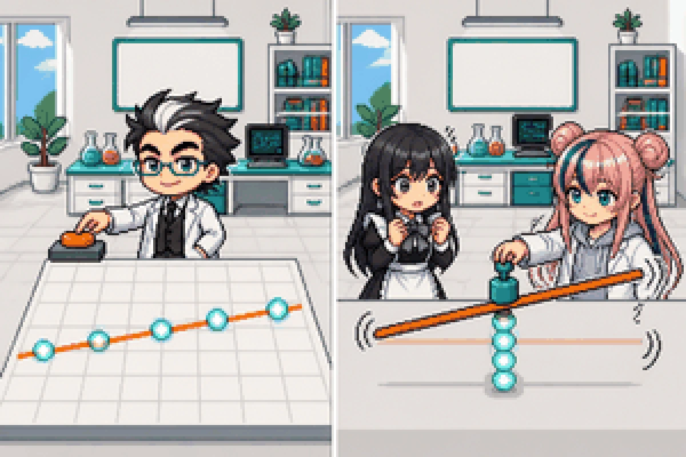

5장 · 1부
연립방정식 — 답을 한 번에 풀기
Ax = b, 역행렬, 크래머 공식, 해의 종류, 그리고 정규방정식.

원자료 카드 MATH-05 · Systems of Linear Equations방법: β = (XᵀX)⁻¹Xᵀy일상: 두 조건으로 값 맞히기

박사4장에서는 가중치를 손으로 맞췄죠. 가장 좋은 직선을 공식 한 번으로 구할 수는 없을까요?

시아공식 한 방이면 너무 편하겠다!

조수 하루연립방정식을 행렬로 풀면 돼요. 선형회귀에서는 그걸 정규방정식이라고 불러요.
왜 이 개념이 필요한가
- 문제 — 가장 덜 틀린 직선을 정확히 구하고 싶다.
- 앞 장의 한계 — 4장은 슬라이더로 어림했다.
- 해법 — 연립방정식 Ax = b를 역행렬로 풀듯, 회귀의 가중치도 공식 하나로 푼다.
쉽게 말하면 — "사과 2개와 배 3개가 7천 원, 사과 1개는 배 1개보다 천 원 비싸다"에서 값을 맞히는 문제를 표(행렬)로 풀면 Ax = b입니다.
수학 수식을 어려워하는 조수가 대신 물어봅니다

조수 (XᵀX)⁻¹Xᵀy… 위첨자가 두 개나 있어요. 이걸 어떻게 읽어요?
말로 하면 — Xᵀ는 X를 눕힌 것(전치), ⁻¹는 역행렬입니다. "X를 눕혀 X와 곱하고, 그 역행렬에, 눕힌 X와 정답 y의 곱을 곱한다"고 읽습니다.
Ax = b → x = A⁻¹b , 선형회귀: β = (XᵀX)⁻¹ Xᵀy
| 식 조각 | 읽는 법과 뜻 |
|---|
| A | 계수 행렬 — 식에 붙은 숫자들 |
| x, β | 구할 값 — 연립방정식의 답, 회귀의 가중치 |
| det(A) | 행렬식 — 0이 아니면 답이 하나, 0이면 답이 없거나 무수히 많음 |
| XᵀX | 특성끼리 겹치는 정도를 모은 표 (7장 공분산과 닮음) |
숫자로 한 번 해 보기원자료 예제: 2x + 3y = 7, x − y = 1. A = [2 3 ; 1 −1], 행렬식 = 2×(−1) − 3×1 = −5 ≠ 0.
크래머 공식: x = det(Aₓ)/det(A) = (7×(−1) − 3×1)/(−5) = −10/−5 = 2, y = (2×1 − 7×1)/(−5) = −5/−5 = 1.
원자료 7번 표: 점 (1, 2), (2, 3), (3, 5)에 직선을 맞추면 β = (XᵀX)⁻¹Xᵀy로 기울기 1.5, 절편 1/3 ≈ 0.33. 예측 1.83, 3.33, 4.83.
학교 수학으로 보면 — 연립일차방정식(중학교 2학년), 행렬로 연립방정식 풀기(고등학교 선택).

조수 결국 선형회귀도 연립방정식이었어요. 행렬식이 0이면 답이 안 정해진다는 것만 꼭 기억할게요.
생선 가게에서
길이 → 무게 직선을 정규방정식으로 구하면 슬라이더 없이 한 번에 나옵니다. 그런데 생선의 길이가 모두 거의 같으면(행렬식 ≈ 0) 직선이 크게 흔들립니다.
일상으로 치면
키가 모두 170cm인 친구들만 모아 "키와 몸무게의 관계"를 물으면 답할 수 없습니다. 키가 달라야 기울기를 정할 수 있습니다.
비유의 한계 — 다만 실제 데이터에서는 키가 '완전히' 같은 경우보다 '거의' 같은 경우가 많아, 답이 없는 대신 크게 흔들립니다.
AI 현장 — 이 공식은 어디에 쓰이나
- 선형회귀의 정규방정식 β = (XᵀX)⁻¹Xᵀy — 원자료 6·7번 상자 그대로입니다.
- 해가 무수히 많다 = 특성이 데이터보다 많을 때(유전자·텍스트 데이터). 이때 규제(릿지)가 필요합니다.
- 해가 없다 = 점들이 한 직선 위에 다 있지 않다. 그래서 "가장 덜 틀린 답"(최소제곱)을 찾습니다.
- 릿지 회귀 β = (XᵀX + λI)⁻¹Xᵀy — 겹치는 특성 때문에 행렬식이 0에 가까워지면, 단위행렬에 λ를 곱해 더해 살립니다.
현장에 옮기면
- 회귀 결과를 보고하기 전에 특성끼리 상관(7장)과 행렬식(또는 조건수)을 확인하세요. 크게 흔들리면 특성을 줄이거나 릿지를 쓰고, λ는 검증 데이터로 정합니다.
연결 고리 — 앞에서 온 것, 뒤로 가는 것
- L5 ← 4장4장 전치·역행렬로 쓴 식입니다.
- L6 ← 7장 → 4장특성이 겹치면(7장 상관) 행렬식 ≈ 0 → 단위행렬 λI를 더해 살림 = 릿지. 이 해설의 핵심 연결입니다.
- L7 → 14장같은 답을 "조금씩 내려가서" 찾는 방법이 경사하강법입니다.
- 더 보기릿지가 왜 라쏘보다 여기 맞는지는 좌표축 위의 그릇 시리즈의 「좌표로 본 라그랑주 승수」로 이어집니다.

주판봇공식이 있으니 언제나 정답이 딱 나오죠!

초파리 연구원정말? 점들을 한 세로줄에 모아 봐. 그리고 λ를 올려 봐.

조수 하루행렬식이 0에 가까워질 때 직선이 어떻게 되는지 볼게요.
풀이 — 이 숫자는 무슨 뜻인가
점을 옮기면 직선이 바로 다시 계산됩니다. 공식 한 번이면 되니까요.
"한 세로줄에 모으기"를 누르면 행렬식이 1보다 작아지고, 기울기가 크게 흔들립니다. 점이 조금만 움직여도 직선이 뒤집힙니다.
λ를 올리면 XᵀX의 대각선에 λ가 더해져 행렬식이 커지고, 직선이 안정됩니다. 대신 정답에서 조금 물러난 답이 됩니다. 이것이 릿지입니다.
해석 문장 — "행렬식 0.14"는 "생선 길이가 거의 같아서 길이로 무게를 설명할 근거가 약하다"는 경고입니다.
AI 판단 코너 — 그대로 믿어도 될까?
AI가 회귀 분석 결과로 "광고비 1원당 매출 −35만 원"이라는 계수를 냈다. 그대로 보고해도 될까?
확인해 보기
의심해야 합니다. 광고비와 비슷하게 움직이는 다른 변수가 함께 들어가 행렬식이 0에 가까우면, 계수가 크게 흔들리고 부호까지 뒤집힙니다. 변수끼리 상관(7장)을 확인하고, 릿지처럼 규제를 써 보거나 겹치는 변수를 빼 봅니다.
📝 원자료와 다르게 쓴 곳 — 원자료 5번 표의 유일해 예시 "x = 1, y = 2"는 어떤 식의 답인지 없이 답만 있습니다. 이 페이지에서는 식 2x + 3y = 7, x − y = 1과 답 x = 2, y = 1로 함께 보입니다.
이 장의 한계 — 데이터가 아주 크면 (XᵀX)⁻¹를 계산하기 무겁습니다. 조금씩 내려가며 찾는 방법(14장)이 필요합니다. 그 전에, 데이터 자체를 읽는 법(2부)을 봅니다.
파이썬 코드로 보면 (몰라도 됩니다)
beta = np.linalg.solve(X.T @ X + lam*np.eye(2), X.T @ y)
λ(lam)가 0이면 보통 회귀, 0보다 크면 릿지입니다.
확인 퀴즈 — 행렬식이 0인 연립방정식은?
행렬식 0이면 역행렬이 없고, 답이 없거나 무수히 많습니다.원자료 5번 표 '해의 종류'를 다시 보세요.확인 퀴즈 — 정규방정식의 행렬식이 0에 가까울 때 일어나는 일은?
역행렬이 불안정해 답이 크게 흔들립니다. λI를 더하면 안정됩니다.대시보드에서 '한 세로줄에 모으기'를 눌러 보세요.
박사정규방정식은 직선을 한 번에 줍니다. 단, 행렬식이 0에 가까우면 믿지 말고 λ를 생각하세요.
 X1~X3: 이제 실습 차례! 하루, 힘내!
X1~X3: 이제 실습 차례! 하루, 힘내!실습 대시보드 5 · 한 번에 풀기점 5개를 끌어 보세요 · 예시값
하루의 미션 — 점을 움직여 정규방정식 직선이 어떻게 바뀌는지 보고, 흔들리는 직선을 λ로 살려 주세요.
- 미션 1 · 따라 하기점 하나를 끌어 직선이 바로 다시 계산되는 것을 보세요.
- 미션 2 · 맞혀 보기λ = 0에서 행렬식 det(XᵀX)를 1보다 작게 만들어 보세요. ("한 세로줄에 모으기" 버튼)
- 미션 3 · 도전행렬식이 1보다 작은 채로 λ를 올려 기울기를 3보다 작게 안정시켜 보세요.
 ☆☆☆주판봇: 채점 대기 중!
☆☆☆주판봇: 채점 대기 중!미션 3(도전)은 앞의 두 미션을 마치면 열립니다. 별은 이 브라우저에만 저장되고, 16장 실전 연습장에서 모아 봅니다.


 시아
시아 모아
모아 박사
박사 초파리 연구원
초파리 연구원 주판봇
주판봇